領袖簡介
| Section 所屬支部 |
Post 職位 |
Name 姓名 |
Portrait 肖像 |
Other appointments 其他委任 |
Email 電郵 |
|---|---|---|---|---|---|
Group |
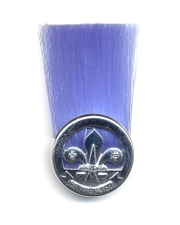
GSL |
Mr. David Choi |
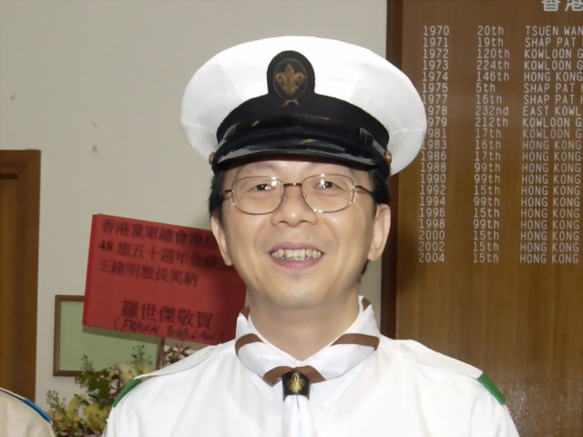 | ||
|
AGSL |
Mr. Pitman Kwok |
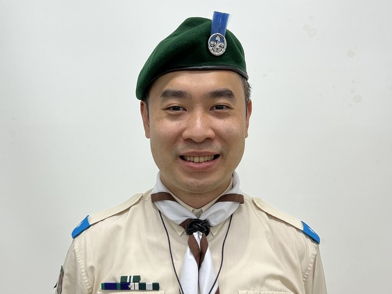 |
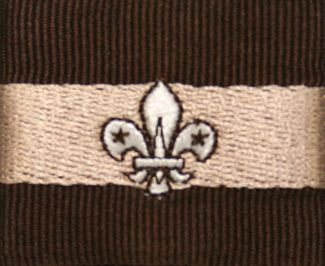
Vice Chairman, Ho Man Tin District |
||
Venture Scout |
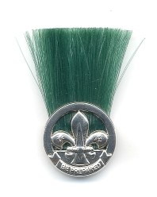
VSL |
Mr. Alexander Lee |
|||
|
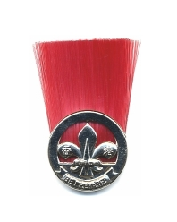
AVSL |
Mr. Patrick Chan |
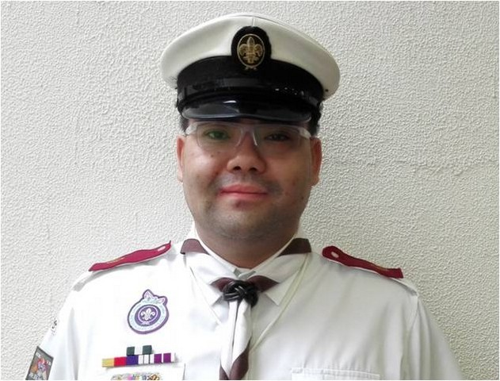 |

Regional Scouter, Hong Kong Island Region |
||
Mr. Ricky Sy |
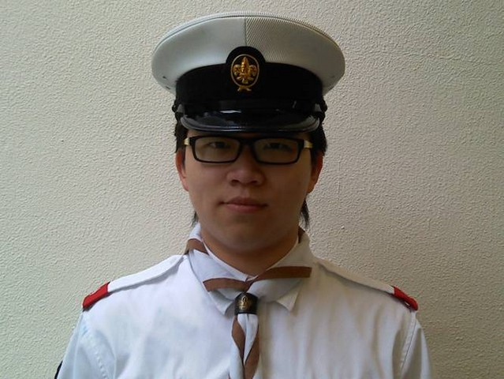 | ||||
Mr. Oscar Lai |
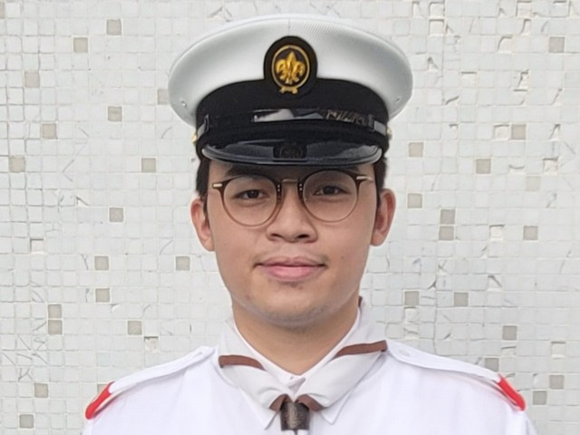 | ||||
Ms. Claudia Cheng |
|||||
Scout |
SL (Air) |
Mr. Norman Wong |
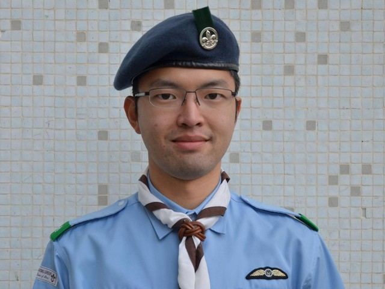 |
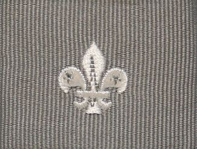
Regional Scouter, Hong Kong Island Region |
|
|
SL |
Mr. Brian Lau |
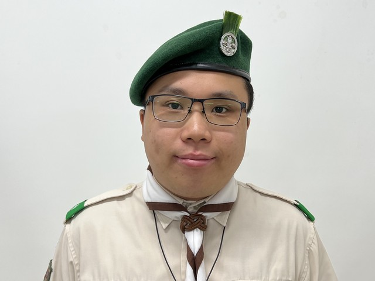 | |||
|
ASL |
Mr. Steve Tam |
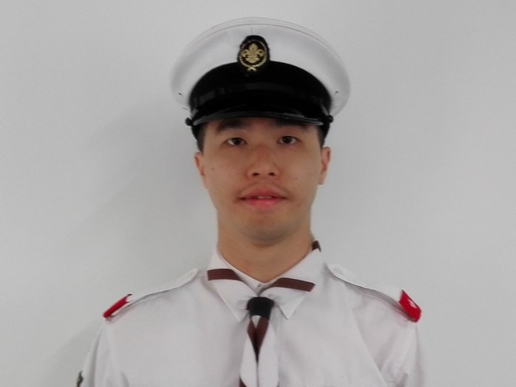 |
Regional Scouter, Hong Kong Island Region |
||
Mr. Jason Wong |
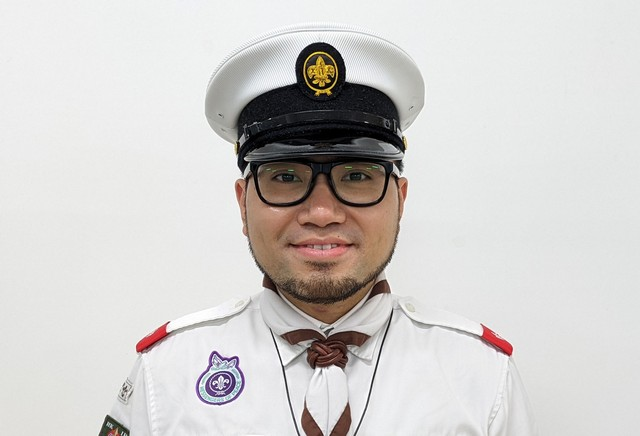 |
Assistant Headquarters Commissioner (Support and Promotion), International Branch |
|||
Mr. Billy Tsui |
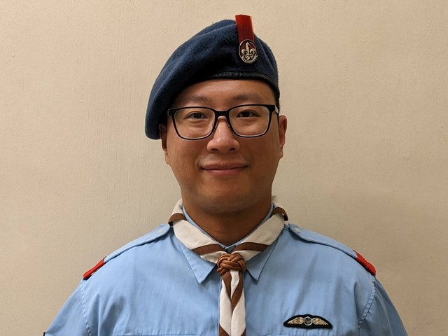 |
Regional Headquarters Commissioner (Air Activities), Hong Kong Island Region |
|||
Mr. Danny Lee |
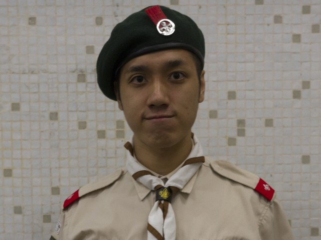 | ||||
Mr. Jerry Yao |
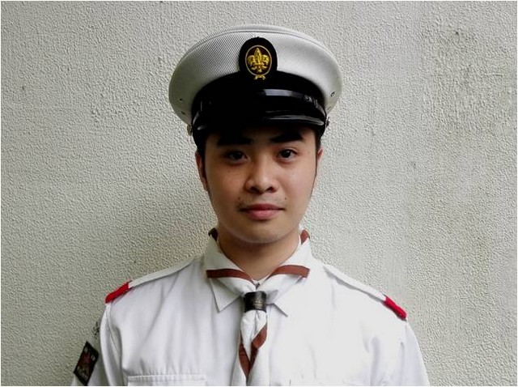 | ||||
Ms. Casey Lee |
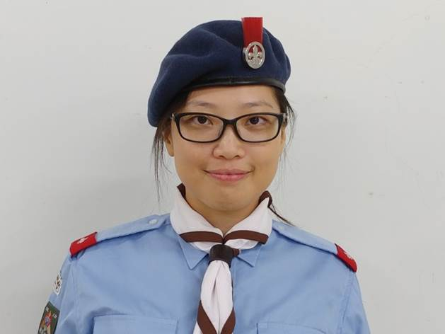 |
Vice Chairman, Ho Man Tin District |
|||
Mr. Benny Chan |
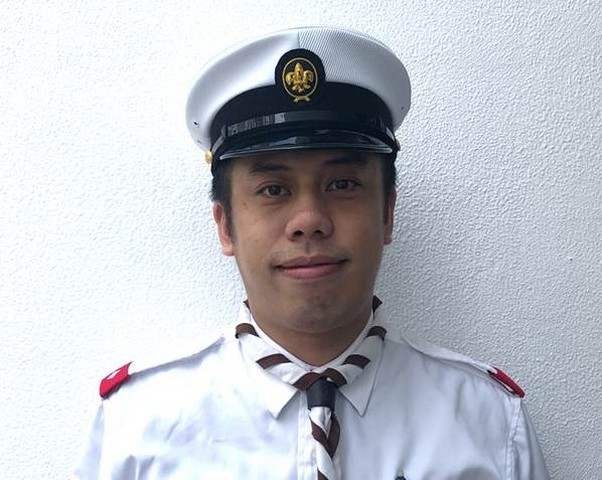 | ||||
Mr. Alex Fok |
|||||
Mr. Long Yeung |
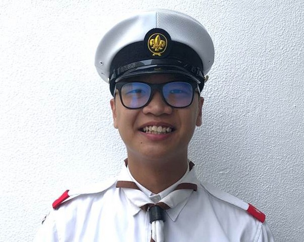 | ||||
Mr. Jackson Fu |
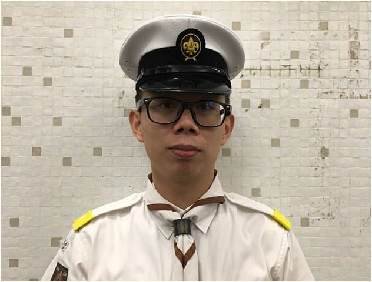 | ||||
Group |
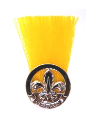
Instructor |
Mr. Terence Kwok |
|||
Mr. Henry Fung |
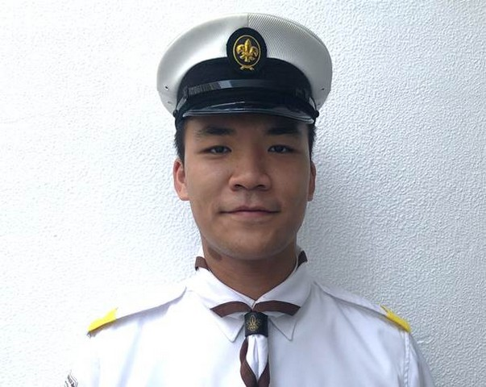 | ||||
Mr. Anthony Chow |
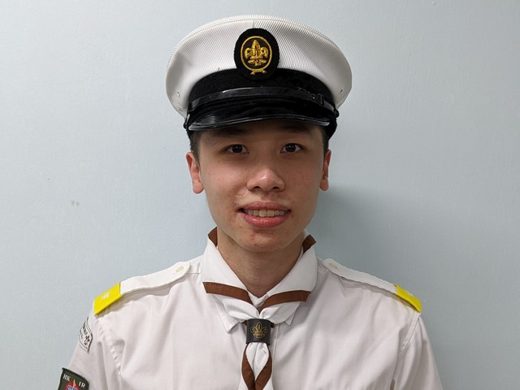 | ||||
Mr. Felix Chan |
|||||
Mr. WH Leung |
|||||
Ms. Josie Tsui |
|||||
Ms. Cheung |
|||||
Ms. Tiffany Chow |